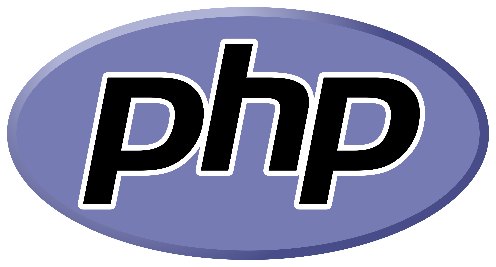
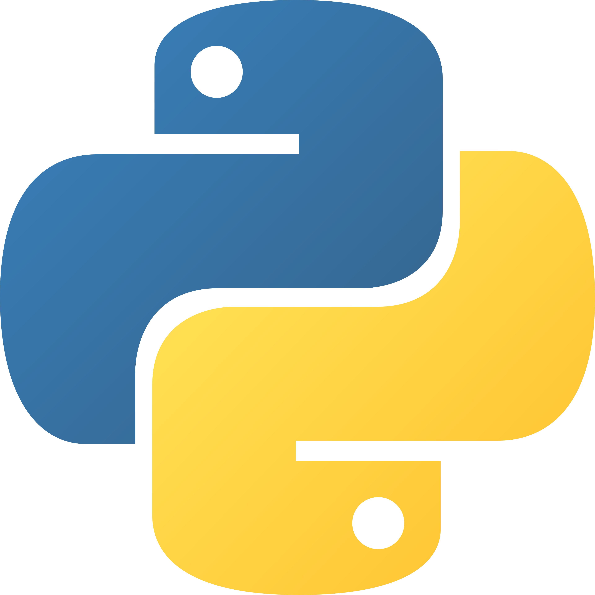

Creator of GISC, LAMP Developer, Software Developer, Photographer


I am a self-taught full stack web developer specialiing in the Linux Apache MySQL PHP (LAMP) approach. I also program software in python and have strong interests in networking. I have received certificates for completing various CISCO netacad courses in networking, cybersecurity and IT which are findable on my LinkedIn. I also practice freelance photography as a past-time and create programming projects for fun.
GISC (Pronounced "Jee-ISC") is a custom Instruction Set Architecture (ISA) built using a reduced instruction set and offers a unique hybrid design between RISC and CISC by mixing the short command form factor of RISC with more complex instructions such as COM and GOTO which offer conditional jumping.
The GISC project includes a Logisim CIRC file as well as a python based simulator and assembler
Check out here
QueueDesk is a free IT ticket management software designed to be self hosted by IT technicians. QueueDesk is designed to make centralising, managing and visualising ticket handling simple and intuitive.
Check out here
Librebook is a free online social media service that anyone can use without having to enter personal information as it goes against the core values of Librebook to collect and use unnecessary information such as addresses or phone numbers.
Check out here